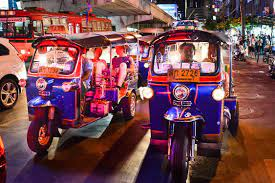

by Joe Bloggs | 1 day ago
An Insider's Guide to Thailand
- Getting Flight Tickets
- Getting Around
- Famous Landmarks
- Contact Details
Thailand can be both amazingly fun & incredibly overwhelming, especially if you've never been.
Luckily, I'm here to give you an insider's guide and make your first trip a pleasurable experience.
By taking my tips and tricks, and following your gut, yo'll have an unforgettable experience!
Getting Flight Tickets
Flights to Thailand can be booked relatively inexpensively, depending on the time of year.
We'd always recommend booking through British Airways - they fly direct from London 5 times a week!
Getting around

Getting around Thailand isn't difficult. There is a plethora of public transport and travel agents who are able to provide information.
Famous landmarks

Thailand is one of Asia's most welcoming and fascinating countries that draws millions of visitors every year.
It is home to many fascinating historical, cultural and natural landmarks.
Here is a list of my favourite 10 landmarks in Thailand.
- The Grand Palace
- The Emerald Lagoon
- Sukhothai Historical Park
- Wat Arun
- Khao Yai National Park
- Ayutthaya Historical Park
- Wat Rong Khun
- Wat Pharathat Doi Suthep
- Khao Phing Kan
- Koh Nang Yuan
📌“There is no other happiness but peace.”
- Thai Proverb